Kalavandan
About Hour and half long performance, with “Baada Khayal, Layakari, Druta Taal, and Taana”, followed by several semi-classical presentation.
Nili Modi, 2018


Vedika Aigalikar, 2017
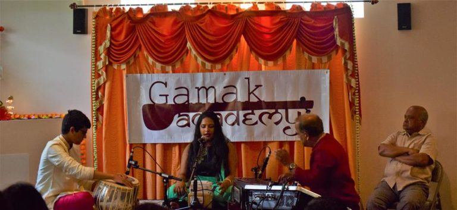
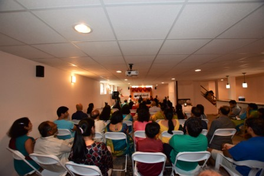
Asavari Rajpurkar, 2016
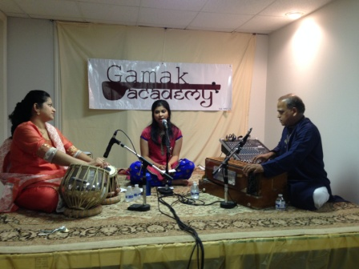
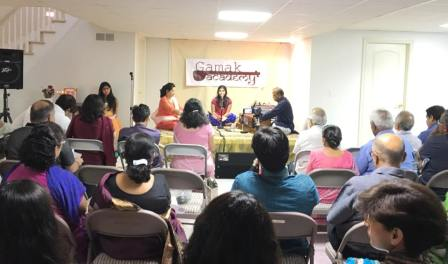
Lopa Rana, 2016
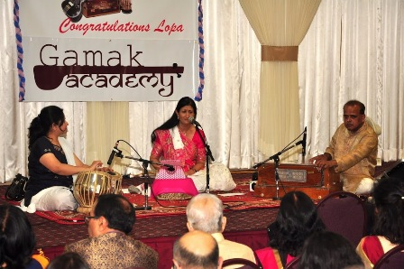
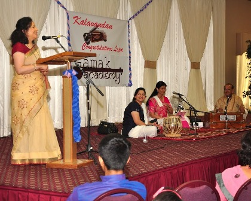
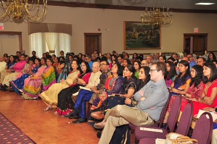
Richa Vakil, 2015
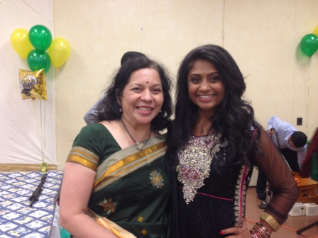
Meera Modi, 2014
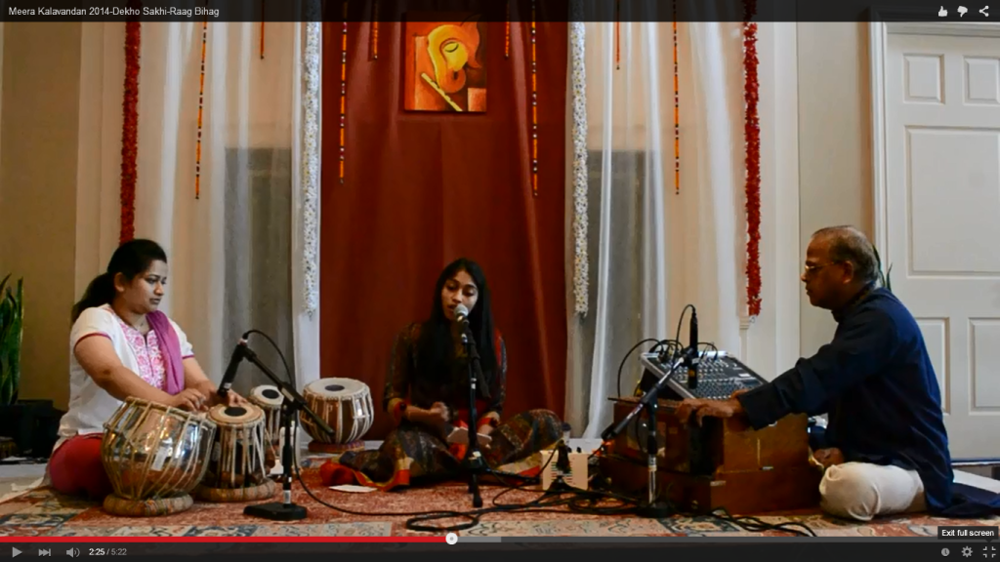
Bhakti Patil, 2014
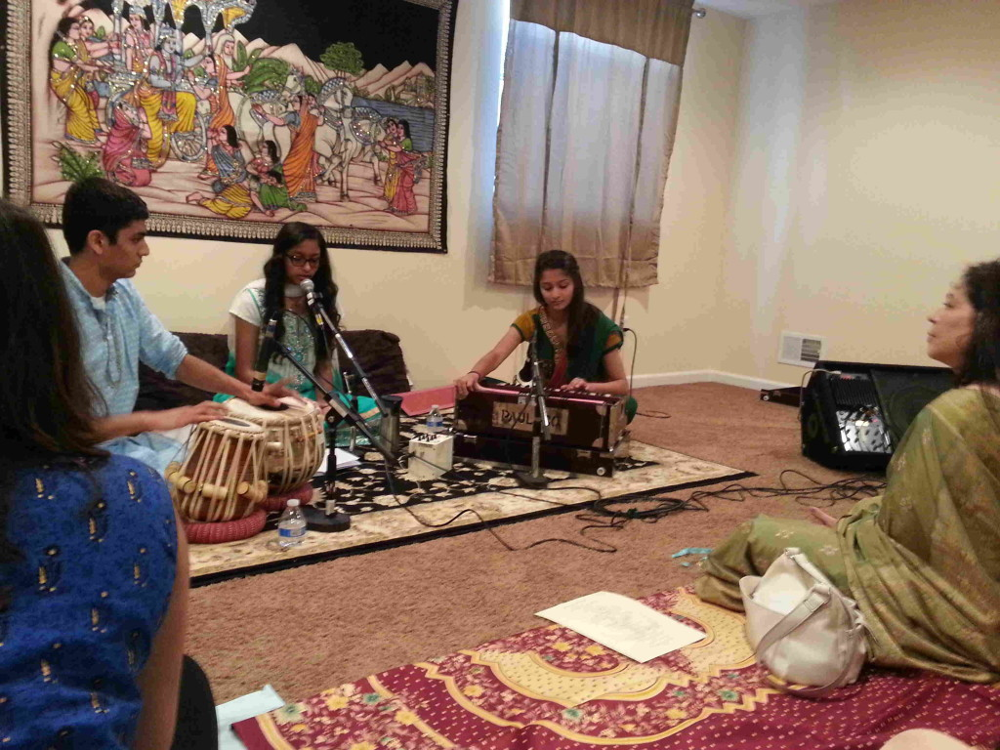
Shweta Pandya, 2013
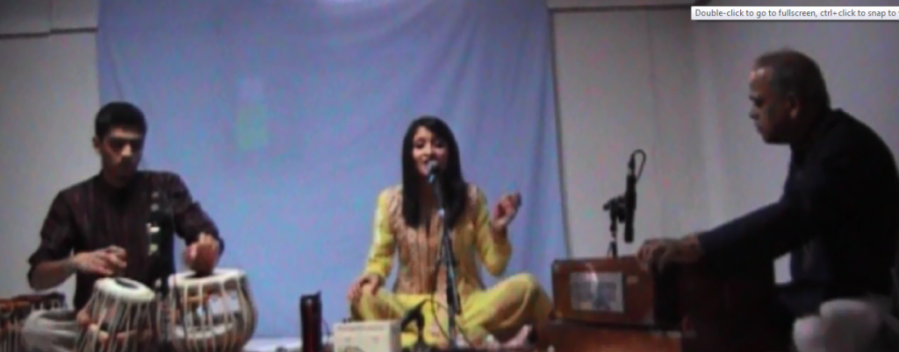
Shivani Rami (Institute’s first Kalavandan at Country Day Auditorium)
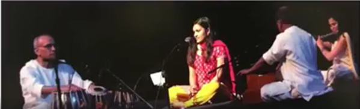